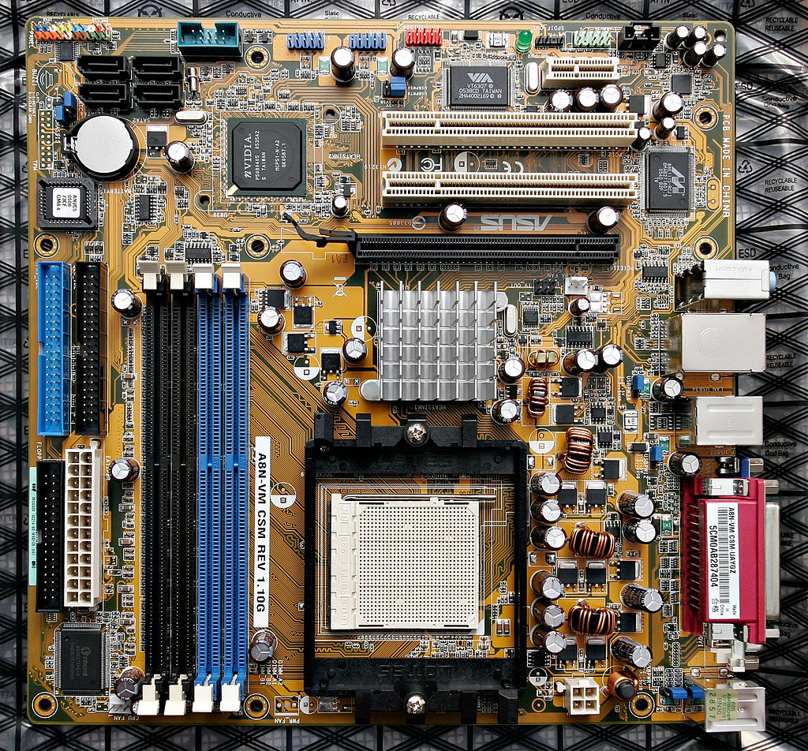

Anakart (İngilizce: mainboard, motherboard, baseboard, system board veya planar board), modern bir bilgisayar gibi karmaşık bir elektronik sistemin birincil ve en merkezî baskılı devre kartıdır. Apple bilgisayarlardaki muadiline logic board (lojik kart) denir ve bazen mobo olarak kısaltılır.[1] Fiziksel yapı olarak anakartlar özel alaşımlı bir blok üzerine yerleştirilmiş ve üzerinde RAM yuvaları genişleme kartı slotları devreler ve yongalar bulunan kare şeklinde bir plakadır. Bu plaka çalışma sistemini organize eder. Bu organizasyon anakart üzerindeki yonga setleri sayesinde olur.
